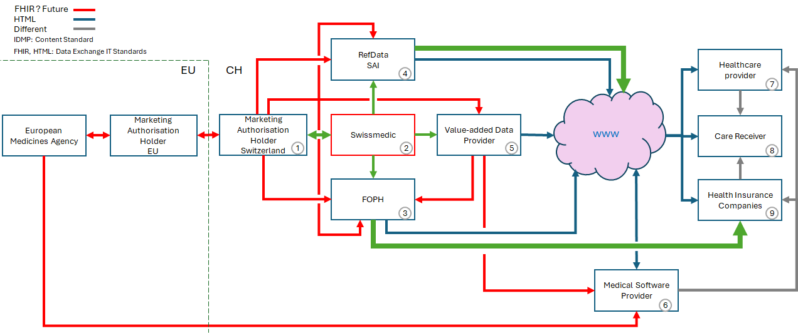

CH EPL (R5)
1.0.1 - trial-use

CH EPL (R5)
1.0.1 - trial-use

This page is part of the CH EPL (R5) (v1.0.1: DSTU 1) based on FHIR (HL7® FHIR® Standard) v5.0.0. This is the current published version in its permanent home (it will always be available at this URL). For a full list of available versions, see the Directory of published versions
This chapter provides an overview on the Data Pipeline of medicinal product information in Switzerland and provided an overview on the planned IDMP/FHIR implementations.
According to the Federal Council’s response to National Council question No. 22.7054, the introduction of IDMP in Switzerland is planned. Please find the summary below:
The introduction of ISO IDMP in Switzerland is planned, with Swissmedic preparing a stepwise implementation plan in coordination with the relevant stakeholders. Patient safety and medicine safety will be fully maintained throughout the rollout. Measures have already been implemented to ensure compatibility with the European Medicines Agency and other authorities regarding relevant medicinal product data. The possibility of exceptions for veterinary, complementary, or herbal medicines is still under review. At present, the Federal Council expects that neither a revision of the Therapeutic Products Act nor adjustments to the corresponding regulations will be necessary.
Different stakeholder are involved in the implementation of IDMP and FHIR in Switzerland. The main driver for the implementation of IDMP are:
Swissmedic is the Swiss Agency for Therapeutic Products, responsible for the licensing, supervision, and monitoring of medicinal products in Switzerland. It oversees the entire lifecycle of medicines to protect public health and ensure safety, efficacy, and quality.
Swissmedic plans to implement the ISO Identification of Medicinal Products (IDMP) standards to enable the unique and consistent identification and description of medicinal products, aligning data and terminology across systems. These standards aim to standardize data exchange and improve data quality, interoperability, and regulatory efficiency. Swissmedic will adapt its forms and systems to comply with IDMP and ensure compatibility with European and international regulatory requirements. The initiative is part of broader efforts to transform Swissmedic’s internal platforms and data processes, including coordination with external stakeholders. Meetings with pilot stakeholder groups began in 2019 and continued in 2023 to inform planning and implementation.
The Swissmedic IDMP Advisory Group is a stakeholder forum that supports the practical implementation of IDMP standards. The group brings together regulators, industry representatives, and other stakeholders to:
The Advisory Group serves as a collaborative interface between Swissmedic and external partners, ensuring that implementation plans reflect both regulatory needs and stakeholder insights.
For more information see: smc-idmp.html
The Federal Office of Public Health (FOPH) is the Swiss federal authority responsible for public health policy, disease prevention, health data infrastructure, and digital transformation in the healthcare sector. It develops national standards, promotes interoperability, and ensures secure, legally compliant health data exchange.
FOPH is actively advancing the use of ISO IDMP standards together with HL7 FHIR (Fast Healthcare Interoperability Resources) to enable structured, interoperable medicinal product information exchange. This work includes the development of FHIR Implementation Guides, such as CH EPL (Swiss Implementation Guide for the electronic specialities list) (This FHIR-IG), which defines FHIR‑based representations of medicinal product data, including IDMP‑aligned elements for Switzerland’s reimbursed products list. This guide supports the data export of IDMP/FHIR‑based data from FOPH to the insurance companies and health care provided Specialities List in FHIR format.
The receipt of IDMP/FHIR‑based data from Swissmedic and marketing authorisation holders is not in the initial scope of the ePL project, as Swissmedic data export in FHIR will be established not earlier than 2028.
FOPH collaborates with other stakeholders — including Swissmedic, HL7 Switzerland, eHealth Suisse, and implementers — to align national exchange formats with international standards and ensure interoperability across healthcare IT systems.
The Electronic Plattform Leistungen (ePL) is a major FOPH‑led project to modernize and digitalize Switzerland’s Specialities List (SL) and other national healthcare lists such as the Mittel‑ und Gegenständeliste. It is part of the DigiSanté program and aims to provide a central digital platform with standardized FHIR/API interfaces for structured SL data delivery. This replacement of the traditional list publication will improve data quality, transparency, and automated reuse, while still offering Excel downloads during the transition. SL data will be structured according to IDMP standards and made available via FHIR from 1 January 2026 onwards.
The ePL project runs through 2027 and is intended to enhance efficiency, automation, and standardization in listings, reimbursement processes, and data sharing across healthcare stakeholders.
For more information see: foph-epl.html
The Refdata Foundation is a non-profit organization that governs and maintains standardized reference data for the life sciences sector. Its mission is to ensure consistent, high-quality, and internationally aligned data for medicinal products, substances, and related entities. Through collaboration with regulatory authorities, industry, and stakeholders, the foundation supports interoperability, compliance with standards like ISO IDMP, and efficient data exchange across Switzerland and internationally.
The IDMP User Group is a dedicated community within Refdata focusing on the adoption and implementation of IDMP standards. Its role includes:
The IDMP User Group acts as a bridge between regulatory authorities, data providers, and implementers, ensuring that Refdata remains compliant, interoperable, and up-to-date with global standards.
The following datapipeline overview illustrates the dataflow of medicinal product data in the Swiss health landscape. The focus of this FHIR-IG is the datacommunication between FOPH (3) and Health Insurance Companies (9).
The red marked lines indicate all communications planned to be moved to FHIR within the next 5 - 10 years. This includes the following Organisations and steps:
FOPH is publishing the information on reimbursed products via the Spezialitätenliste website ((3) to www) and via FHIR ((3) - (9)). The Green arrows indicate the FHIR exchanges currently under development. They cover the data export by FOPH (this FHIR-IG), the data communication by Swissmedic (see smc-idmp) and the export of strucuterd data by Refdata (SAI, Simis).

Fig. 1: Data Pipeline